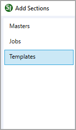
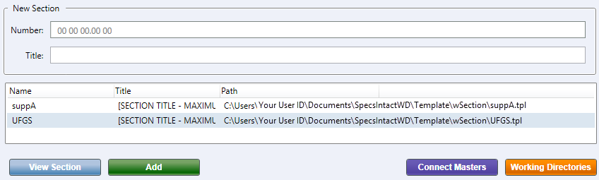
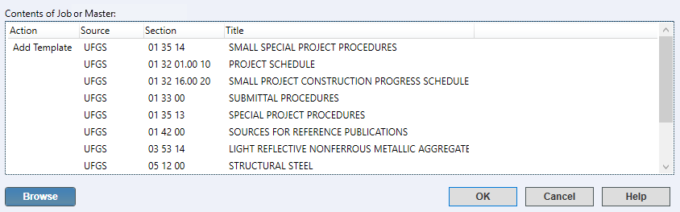

This command can also be executed from the SpecsIntact Explorer's Toolbar, Right-click menu, or keyboard shortcut Alt+A.
The Add Sections window provides three distinct tabs to pick the Sections to add to your Job or Master, specifically from Masters, other Jobs, Templates, or any combination of these sources. The Templates tab is specifically designed to assist in creating new specification Sections for the UFGS Master, a Job, or local Master. The UFGS Section Template provides a structured framework, compliant with the Unified Facilities Guide Specification (UFGS) Format Standard (UFS 1-300-02), for generating new specification Sections. The UFGS Section Template facilitates the creation of new Sections destined for the UFGS Master or unique Sections for a Job or local Master not found within the standard UFGS Master.
 New Unified Facilities Guide Specifications (UFGS) Sections must follow the Section Template format and the guidelines outlined in the current Standard Practice for Unified Facilities Criteria and Unified Facilities Guide Specifications (MIL-STD-3007).
New Unified Facilities Guide Specifications (UFGS) Sections must follow the Section Template format and the guidelines outlined in the current Standard Practice for Unified Facilities Criteria and Unified Facilities Guide Specifications (MIL-STD-3007).
Creating a local Master that is customized and specific to your organization, district, region, or company streamlines the process of locating, managing, and appending specifications, facilitating the integration of unique Sections into your projects.
 Click the tabbed commands on the image below to see how to use each function.
Click the tabbed commands on the image below to see how to use each function.


Within the New Section area, the first step is to input the relevant CSI MasterFormat Number and Title, followed by selecting the corresponding UFGS Section Template from the displayed list. When entering the new Section Number in the field, the software will automatically provide the correct format following the MasterFormat numbering.
 To ensure your project Sections align with the industry standards, refer to the official CSI MasterFormat Numbers and Titles.
To ensure your project Sections align with the industry standards, refer to the official CSI MasterFormat Numbers and Titles.
 The UFGS Master specification titles may not align perfectly with the CSI Numbers and Titles; simply matching titles can be insufficient. To locate Sections containing the content you need, you should thoroughly search the UFGS Master using relevant keywords. To ensure your search is comprehensive, use broader functional descriptions or specific material/system names, as relevant information can be embedded in Sections with less obvious titles. Most importantly, avoid creating new Sections from vendor-specific specifications or other specification software unless a thorough content search using these effective methods confirms that no existing Section meets your needs.
The UFGS Master specification titles may not align perfectly with the CSI Numbers and Titles; simply matching titles can be insufficient. To locate Sections containing the content you need, you should thoroughly search the UFGS Master using relevant keywords. To ensure your search is comprehensive, use broader functional descriptions or specific material/system names, as relevant information can be embedded in Sections with less obvious titles. Most importantly, avoid creating new Sections from vendor-specific specifications or other specification software unless a thorough content search using these effective methods confirms that no existing Section meets your needs.
Additionally, the Add Sections Templates tab provides the following actions:
 To add a UFGS Section Template, the Section Number and Section Title must be entered, and the Section Template must be selected.
To add a UFGS Section Template, the Section Number and Section Title must be entered, and the Section Template must be selected.

 Within the Add Sections window, the options to add Sections or a Section Template are concurrently available to you across all of its tabs, regardless of which tab has focus.
Within the Add Sections window, the options to add Sections or a Section Template are concurrently available to you across all of its tabs, regardless of which tab has focus.
 The OK button will execute and save the selections made on all of the tabs.
The OK button will execute and save the selections made on all of the tabs.
 The Cancel button will close the window without recording any selections or changes entered.
The Cancel button will close the window without recording any selections or changes entered.
 The Help button will open the Help Topic for this window.
The Help button will open the Help Topic for this window.
 Download the Unified Facilities Guide Specifications (UFGS) Format Standard (UFS 1-300-02) from the WBDG Website's Unified Facilities Criteria (UFC) page.
Download the Unified Facilities Guide Specifications (UFGS) Format Standard (UFS 1-300-02) from the WBDG Website's Unified Facilities Criteria (UFC) page.
 Watch all of the eLearning modules within Chapter 2 - Creating a Job and Adding Sections and the Search and Replace eLearning module within Chapter 8 - Additional Tools and Techniques.
Watch all of the eLearning modules within Chapter 2 - Creating a Job and Adding Sections and the Search and Replace eLearning module within Chapter 8 - Additional Tools and Techniques.
Users are encouraged to visit the SpecsIntact Website's Support & Help Center for access to all of our User Tools, including Web-Based Help (containing Troubleshooting, Frequently Asked Questions (FAQs), Technical Notes, and Known Problems), eLearning Modules (video tutorials), and printable Guides.
| CONTACT US: | ||
| 256.895.5505 | ||
| SpecsIntact@usace.army.mil | ||
| SpecsIntact.wbdg.org | ||